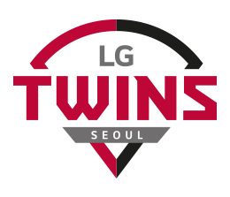

LG Twins?
LG Twins (Korean: LG 트윈스) is a South Korean professional baseball team based in Seoul, South Korea. They are a member of the KBO League. The Twins play their home games at Jamsil Baseball Stadium, which they share with their rival, the Doosan Bears; the stadium is known as "Two families under one roof."
The LG Twins are one of the most popular baseball teams in Korea. They gained many fans in the 1980s–2000s, most of whom live in Seoul.
history
The club was first established in 1982 as MBC Chungyong (translation MBC "Blue Dragons"), owned by the Munhwa Broadcasting Corporation. For the very first half-season in 1982 the team played at Dongdaemun Baseball Stadium; in the fall season of 1982 the team moved to their current home, Jamsil Baseball Stadium. (In 1985, the OB Bears [now the Doosan Bears] began using the same stadium as their home park.)
The Chungyong were initially led by player-manager Baek In-chun, a Korean who had spent 19 seasons in Japan's Nippon Professional Baseball. Incredibly, at age 38, Baek led the league in hitting in 1982, with a record-setting .412 batting average (albeit in only 298 plate appearances). As manager, Baek brought the Japanese "small ball" technique to his team, focusing on sacrifice bunts, stolen bases, and sacrifice flies. Although the team finished above .500 in 1982, Baek was let go by the team after the season.
In 1989, the franchise was acquired by LG Corporation, which renamed the team the LG Twins. The Twins won the Korean Series in 1990—the first year with their new name—under the returned Baek In-chun (now a full-time manager). They again won the KBO championship in 1994. The Korean Series MVP was Kim Yong-soo in both Series. Kim's number, 41, was for many years the only retired number of the team, before Lee Byung-kyu's number 9 was retired on July 9, 2017, in a ceremony that took place both before and after the game against the Hanwha Eagles.
